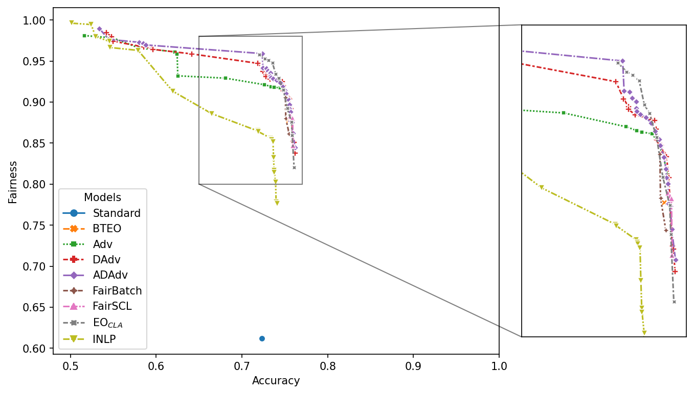

Visualization
import fairlib
%matplotlib inline
import seaborn as sns
import matplotlib.pyplot as plt
from pathlib import Path
Load experimental results
Moji_results = fairlib.analysis.retrive_results("Moji", log_dir="../analysis/results")
Bios_results = fairlib.analysis.retrive_results("Bios_gender", log_dir="../analysis/results")
Bios_intersection_results = fairlib.analysis.retrive_results("Bios_both", log_dir="../analysis/results")
Moji_results["Standard"] = Moji_results["Vanilla"]
Moji_results["ADAdv"] = Moji_results["GatedDAdv"]
Moji_results["FairBatch"] = Moji_results["OldFairBatch"]
Moji_results["EO$_{CLA}$"] = Moji_results["GDEO"]
Moji_plot_df = fairlib.analysis.final_results_df(
results_dict = Moji_results,
model_order=["Standard", "BTEO", "Adv", "DAdv", "ADAdv", "FairBatch", "FairSCL", "EO$_{CLA}$", "INLP"],
pareto = True,
pareto_selection = "test",
selection_criterion = None,
return_dev = True,
)
Basic Plot
def make_plot(plot_df, figure_name=None):
plot_df["Fairness"] = plot_df["test_fairness mean"]
plot_df["Accuracy"] = plot_df["test_performance mean"]
figure = plt.figure(dpi = 100)
with sns.axes_style("white"):
sns.lineplot(
data=plot_df,
x="Accuracy",
y="Fairness",
hue="Models",
markers=True,
style="Models",
)
plt.legend(loc='center left', bbox_to_anchor=(1, 0.5))
plt.tight_layout()
if figure_name is not None:
figure.savefig(Path(r"plots") / figure_name, dpi=960, bbox_inches="tight")
make_plot(Moji_plot_df)

Zoomed Plots
fairlib.analysis.tables_and_figures.make_zoom_plot(
Moji_plot_df,
xlim=(0.48,1.0),
zoom_xlim=(0.65,0.77),
zoom_ylim=(0.8,0.98),
# figure_name = "moji_fairlib"
)

AUC - Performance-Fairness Tradeoff
adv_pareto_df = Moji_plot_df[Moji_plot_df["Models"]=="Adv"]
image = sns.lineplot(
data=adv_pareto_df,
x="test_performance mean",
y="test_fairness mean",
hue="Models",
markers=True,
style="Models",
)
_xlim = image.axes.get_xlim()
_ylim = image.axes.get_ylim()
_tmp_df = fairlib.analysis.utils.auc_performance_fairness_tradeoff(
adv_pareto_df,
# random_performance = 0.5,
performance_threshold = 0.70,
# interpolation = "constant",
interpolation = "linear",
)[1]
plt.fill_between(_tmp_df["test_performance mean"], _tmp_df["test_fairness mean"], alpha=0.30)
plt.xlim(_xlim)
plt.ylim(_ylim)
(0.8888970059716558, 0.9854552013667007)

fairlib.analysis.utils.auc_performance_fairness_tradeoff(
adv_pareto_df,
# random_performance = 0.5,
performance_threshold = 0.70,
# interpolation = "constant",
interpolation = "linear",
)[0]
0.051836936857947394
fairlib.analysis.utils.auc_performance_fairness_tradeoff(
adv_pareto_df,
random_performance = 0.5,
performance_threshold = 0.70,
# interpolation = "constant",
interpolation = "linear",
normalization = True
)[0]
0.1727897895264913